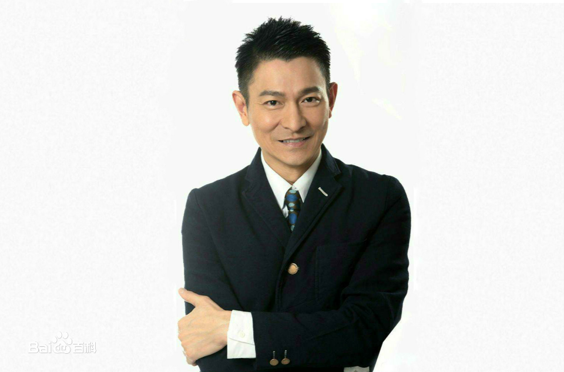

目录
早年经历
主要作品
早年经历
刘德华出生于香港新界，在家中排行老四，幼时随家人搬到了九龙钻石山的木屋区居住，并和姐弟一起帮助家里打理卖稀饭的生意。1973年，刘德华随家人搬入香港蓝田邨第15座14楼。刘德华从黄大仙天主教小学毕业后升读可立中学 。在可立中学读书期间，刘德华积极参加校内学校剧社的表演，在老师杜国威的指导下学习戏剧方面的知识。此外，他还参与包括编剧在内的幕后制作。刘德华在中五会考获得1B3D2E（中文读本A）的成绩。中六上学期后，他到香港电视广播有限公司的艺员训练班受训，从而开始了演艺之路。
返回目录
主要作品
参演电影
追龙2017-12 饰演雷诺 导演刘伟强 主演甄子丹, 郑则仕, 胡然
侠盗联盟2017-8-11 饰演张丹 导演冯德伦 主演张静初, 舒淇, 杨佑宁
拆弹专家[116] 2017-4-28 饰演拆弹专家 导演邱礼涛 主演姜武, 小宋佳, 黄宗泽
铁道飞虎2016-12-23 饰演特别出演 导演丁晟 主演成龙, 黄子韬, 王凯
长城2016-12-18 饰演王军师 导演张艺谋 主演马特·达蒙, 景甜, 张涵予
王牌逗王牌[181] 2016-10-01 饰演宝爷 导演王晶 主演黄晓明, 王祖蓝, 沈腾
我的特工爷爷2016-04-01 饰演李政玖 导演洪金宝 主演洪金宝, 朱雨辰, 李勤勤
澳门风云32016-02-08 饰演刀仔 导演王晶 主演周润发
解救吾先生2015-09-30 饰演吾先生 导演丁晟 主演刘烨, 王千源, 吴若普
失孤2015-03-21 饰演雷泽宽 导演彭三源 主演井柏然, 梁家辉
返回目录